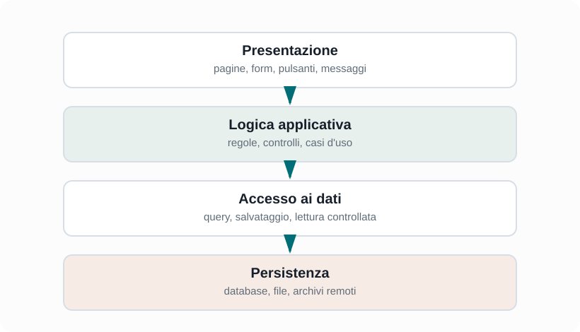

Capitoletto 3
Organizzazione del software
Un software ben organizzato è più facile da capire, testare, modificare e riusare. L'obiettivo non è solo far funzionare il programma oggi, ma renderlo sostenibile anche domani.
Obiettivi della lezione
- Capire il ruolo di moduli, librerie e componenti.
- Spiegare il principio di separazione delle responsabilità.
- Distinguere interfaccia e implementazione.
- Riconoscere dipendenze e accoppiamento tra parti del sistema.
- Leggere una semplice architettura a livelli.
Moduli e componenti
Un modulo è una parte del software che raggruppa funzionalità collegate. Un componente è una parte del sistema con una responsabilità riconoscibile e un'interfaccia attraverso cui collabora con le altre parti.
Dividere un programma in moduli non significa spezzarlo a caso. Significa individuare responsabilità coerenti: gestione utenti, gestione prestiti, validazione dati, accesso al database, interfaccia grafica, comunicazione di rete.
| Parte | responsabilità | Esempio |
|---|---|---|
| Modulo utenti | Gestisce login, ruoli e profili. | Controlla se un docente può prenotare. |
| Modulo calendario | Gestisce date, orari e disponibilità. | Evita due prenotazioni nello stesso orario. |
| Modulo dati | Legge e salva informazioni persistenti. | Memorizza prenotazioni nel database. |
| Interfaccia | Mostra informazioni e raccoglie input. | Pagina per creare una nuova prenotazione. |
Separazione delle responsabilità
La separazione delle responsabilità afferma che ogni parte del software dovrebbe occuparsi di un compito preciso. Quando una funzione o una classe fa troppe cose, diventa difficile da leggere, testare e correggere.
| Situazione | Problema | Miglioramento |
|---|---|---|
| Tutto il codice in un unico file. | Orientarsi diventa difficile. | Separare file per funzionalità o livelli. |
| Una funzione contiene molte regole diverse. | Modificare una regola può rompere le altre. | Dividere in funzioni più piccole. |
| La grafica contiene query al database. | Interfaccia e dati sono troppo legati. | Creare un livello dedicato all'accesso ai dati. |
Architettura a livelli

Una scelta comune e organizzare l'applicazione in livelli. Ogni livello ha un ruolo e comunica con livelli vicini attraverso interfacce definite.
| Livello | Compito | Esempio |
|---|---|---|
| Presentazione | Mostra dati e riceve input dall'utente. | Pagina web, form, pulsanti, messaggi. |
| Logica applicativa | Applica le regole del sistema. | Controlla se una prenotazione e valida. |
| Accesso ai dati | Legge e scrive dati in modo controllato. | Funzioni che interrogano il database. |
| Persistenza | Conserva dati nel tempo. | Database, file, archivio remoto. |
Interfaccia e implementazione
L'interfaccia descrive come usare un componente; l'implementazione descrive come il componente svolge realmente il lavoro. Questa separazione permette di cambiare l'interno di un modulo senza obbligare tutte le altre parti del software a cambiare.
Interfaccia del modulo Prestiti
- registraPrestito(idLibro, idUtente)
- registraRestituzione(idPrestito)
- cercaPrestitiUtente(idUtente)
Implementazione possibile
- controlla disponibilità
- salva i dati nel database
- restituisce conferma o erroreChi usa il modulo deve sapere quali operazioni può chiamare e quali dati deve fornire. Non deve conoscere per forza tutte le query, i controlli interni o i dettagli del salvataggio.
Dipendenze e accoppiamento
Una dipendenza nasce quando una parte del software ha bisogno di un'altra per funzionare. Le dipendenze sono normali, ma devono essere gestite. Se ogni modulo conosce troppi dettagli degli altri, il sistema diventa fragile.
| Concetto | Significato | Effetto |
|---|---|---|
| Accoppiamento alto | I moduli dipendono molto dai dettagli interni degli altri. | Una modifica locale può causare molti errori. |
| Accoppiamento basso | I moduli comunicano tramite interfacce chiare. | Il sistema è più facile da modificare. |
| Coesione alta | Le funzioni di un modulo sono legate allo stesso scopo. | Il codice è più comprensibile. |
| Coesione bassa | Un modulo contiene funzioni non correlate. | Il modulo diventa confuso e difficile da testare. |
Librerie, framework e riuso
Il riuso permette di sfruttare soluzioni già disponibili invece di riscrivere tutto da zero. Una libreria offre funzioni pronte; un framework fornisce una struttura più ampia dentro cui costruire l'applicazione.
| Strumento | Che cosa offre | Attenzione |
|---|---|---|
| Libreria | Funzioni riutilizzabili chiamate dal programma. | Va scelta e aggiornata con cura. |
| Framework | Struttura e regole per costruire l'applicazione. | Richiede di rispettare un modo di lavorare. |
| API | Interfaccia per usare servizi o componenti esterni. | Bisogna gestire errori, limiti e sicurezza. |
Esercizi guidati
- Dividi un'app per prenotare il laboratorio in almeno quattro moduli.
- Per ogni modulo scrivi una responsabilità precisa.
- Indica due dipendenze inevitabili e spiega perché esistono.
- Disegna un'architettura a livelli per un'app con interfaccia web e database.
- Scrivi un esempio di funzione troppo grande e proponi come dividerla.
Domande con risposta semplice
Perché si divide un programma in moduli?
Per rendere il software più comprensibile, modificabile, testabile e riutilizzabile.
Che cos'è un'interfaccia?
E il modo in cui un componente espone le proprie operazioni agli altri componenti, senza mostrare tutti i dettagli interni.
Che cosa significa accoppiamento alto?
Significa che i moduli dipendono troppo dai dettagli degli altri, quindi una modifica può avere molti effetti indesiderati.
Una libreria e un framework sono la stessa cosa?
No. Una libreria offre funzioni da usare; un framework impone anche una struttura generale all'applicazione.
Per ripassare
Studia insieme questi termini: modulo, componente, responsabilità, interfaccia, implementazione, dipendenza, accoppiamento, coesione, livello, libreria e framework.